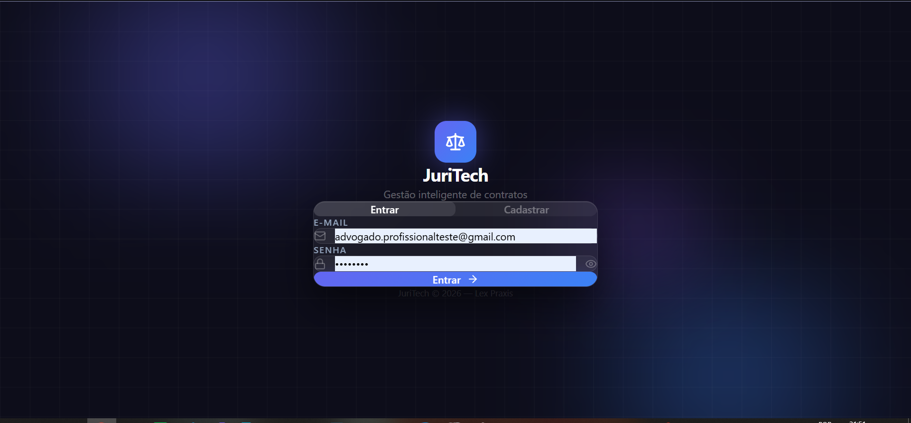
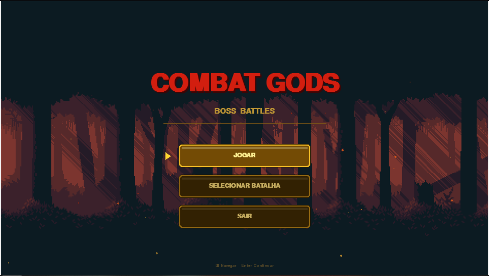
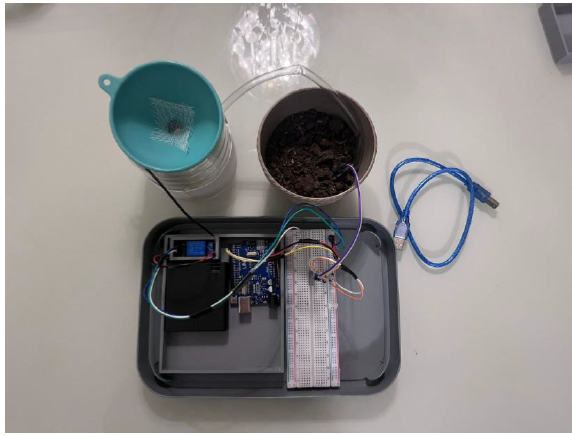
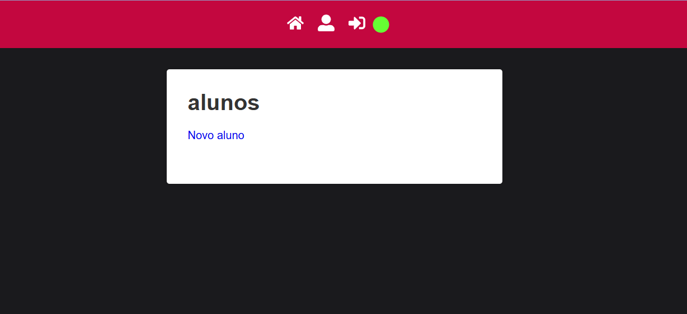

ONLINE
SOBRE
Um pouco sobre mim
Sou estudante de Engenharia de Software, com foco em desenvolvimento backend. Venho aprimorando meus conhecimentos em Python, APIs, lógica de programação e estruturas de dados.
Gosto de aprender na prática, resolver problemas e desenvolver soluções que transformem ideias em projetos reais. Busco oportunidades para aplicar meus conhecimentos, evoluir tecnicamente e contribuir com projetos de software.
Baixar meu CV
3+
projetos desenvolvidos
com tecnologia
FOCO
Desenvolvimento Backend
TECNOLOGIAS
Python, APIs e bancos de dados
COMPETÊNCIAS
Lógica de programação e resolução de problemas
HABILIDADES
Tecnologias que uso
Tecnologias que uso
no dia a dia.
Python
Django
Node.js
JavaScript
C
HTML
CSS
SQL
PostgreSQL
MySQL
Git
GitHub
Figma
n8n
Django
Node.js
JavaScript
C
HTML
CSS
SQL
PostgreSQL
MySQL
Git
GitHub
Figma
n8n
Soft-skills
Além do código, as habilidades que fazem a diferença.
Trabalho em equipe
Comunicação
Resolução de problemas
Pensamento crítico
Autodidatismo
Adaptabilidade
TRAJETORIA
Minha caminhada na
Minha caminhada na
tecnologia.
Projetos e colaboração
@Evolução- Desenvolver projetos que aprofundem meus conhecimentos em desenvolvimento de software.
- Buscar oportunidades de colaboração em Projetos de código aberto.
Aplicação prática dos conhecimentos.
@Aprendizado- Aprofundamento dos conhecimentos em lógica de programação e resolução de problemas.
- Desenvolvimento gradual das bases necessárias para construir projetos de software.
Construção dos fundamentos
@Aprendizado- Desenvolver projetos que aprofundem meus conhecimentos em desenvolvimento de software.
- Buscar oportunidades de colaboração em Projetos de código aberto.
Início da Engenharia de Software
@Graduação- Ingresso na graduação em Engenharia de Software.
- Início da formação acadêmica voltada ao desenvolvimento de sistemas e à tecnologia.
PROJETOS
Ideias que
Ideias que
sairam do papel.

Juri-Tech
Projeto SASS, de automatização de processos. Vencedor do Hackathon de Inteligência Artificial e Empregabilidade, desenvolvido em equipe.
n8n
TypeScript
Git
React
PostgreSQL
Ver projeto no Github

Combat Gods
Jogo 2D desenvolvido em Python com a biblioteca Pygame, incluindo sistema de batalhas contra chefes.
Python
Ver projeto no Github

Irrigador automatico
Projeto de automação utilizando Arduino, sensor de umidade do solo e C++ para controlar a irrigação.
C++
Ver projeto no Github

Api REST
ApiREST, CRUD. Com autenticação com JWT, MySQL, Node.js e React.
MySQL
React
Node.js
Ver projeto no Github
CONTATOS
Bora
construir